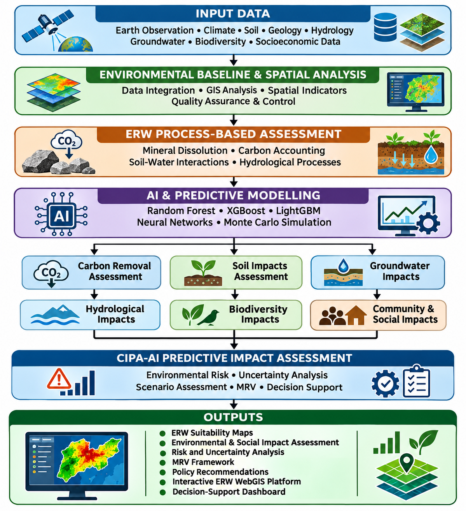

AI-Enabled Predictive Environmental & Social Impact Assessment of Enhanced Rock Weathering
Annual climate and hydrological indicators
Supplied combined annual summary table
Environmental vulnerability classes
Area by class from supplied EVI table
Environmental baseline
Rainfall, ET, temperature, soil moisture, runoff, vegetation and soil properties.
Social impact assessment
Population exposure proxies, stakeholder evidence gaps, livelihoods, equity and safeguards.
ERW CDR scenarios
Transparent stoichiometric and lifecycle assumptions, not verified net removal.
Environmental baseline tables
Select the relevant source CSV in the Data Explorer.
Included source datasets cover annual environmental summaries, regional annual summaries, scenario tables, combined ML training data, integrated environmental samples, soil statistics, predictions and missing-data reporting.
Soil property statistics
Source: CIPAAI_CapeTown_Spatial_Statistics.csv
*Confirm SOC units, depth and raster provenance against the data dictionary before publication.
Available environmental figures
Soil, vegetation and environmental vulnerability maps supplied in the archive
Spatial screening evidence
Candidate-area screening and constraints
Candidate-area statistics
Source result, analysis year 2025
Spatial source layers
The archive includes GeoTIFF environmental stacks, soil properties, elevation, slope, land cover, EVI and population density. They are retained in data/rasters for GIS analysis; browser rendering of large GeoTIFFs requires a raster tile service or conversion to web tiles.
Interactive CDR scenario calculator
Editable assumptions; results are per hectare and per application scenario.
Formula basis: theoretical oxide capacity × dissolution efficiency × carbonation efficiency × rock rate, less lifecycle emissions. This is not a full carbon balance or MRV result.
CDR source assets
The archive contains a carbon sequestration potential map and a 10 t/ha net CDR GeoTIFF. The raster is included in the downloadable source assets; its scenario assumptions should be checked against laboratory and LCA measurements.
Environmental risk register
| Pathway | Potential concern | Evidence / control |
|---|---|---|
| Soil chemistry | pH shifts, nutrient imbalance, trace-element mobilisation | Feedstock assays and repeated soil chemistry |
| Water quality | Alkalinity, dissolved metals, downstream effects | Upgradient/downgradient monitoring and lab QA/QC |
| Hydrology | Infiltration, runoff, soil moisture and recharge pathways | Control plots and water-balance monitoring |
| Biodiversity | Habitat disturbance and sensitive receptors | Ecological surveys and avoidance buffers |
| Air and transport | Dust, traffic, noise and worker exposure | Material handling and occupational safety plans |
| Social equity | Unequal benefits, land access and participation gaps | Engagement and distributional impact analysis |
South African regulatory screening
Applicability must be confirmed by qualified environmental and legal specialists for each proposed site and activity.
Interactive map
Original HTML maps supplied in the archive are embedded below.
Maps are preserved from the source archive. Their own dependencies and data layers may require an internet connection or their original supporting assets.
Figures and map-image gallery
All raster figures included in the supplied archive. Select an image to open its original file.
Research data explorer
All CSV tables discovered in the archive are catalogued and loaded on demand.
CSV source inventory
File catalogue with direct download links
| Source file | Columns | Size | Download |
|---|
GeoTIFF raster inventory
Original raster files are included for QGIS / Python analysis
| Raster file | Size | File |
|---|
Formula and model documentation
Formula reference is also available in documentation/formula_reference.md.
P = precipitation; ET = actual evapotranspiration. Consistent period and units required. This is a water-availability proxy, not groundwater recharge.
Use only with clearly defined, non-overlapping outflow terms. Avoid double counting runoff or other losses.
The source archive does not provide enough evidence in the dashboard to assume undocumented weights or transformations. Refer to the model code/configuration for exact weights, normalisation and directionality.
The supplied Spearman correlation CSV is available in the Data Explorer. Correlation does not imply causation.
Upper-bound stoichiometric screening approximation; total oxides are not necessarily reactive mineral phases.
CDRnet = CDRgross − ELCA
Ensure the LCA term is on the same mass and area basis. This is not an MRV-grade carbon balance.
The supplied configuration includes pH 4.5–7.5, SOC ≤40 g/kg, slope ≤12°, annual rainfall ≥300 mm and 500 m water buffer. It remains a preliminary screen.
MRV requirements
Decision gates
Assessment workflow figure

Available social and impact tables
Social population series, environmental/social clusters, impact assessment and constraints are available in the Data Explorer.
Required social evidence